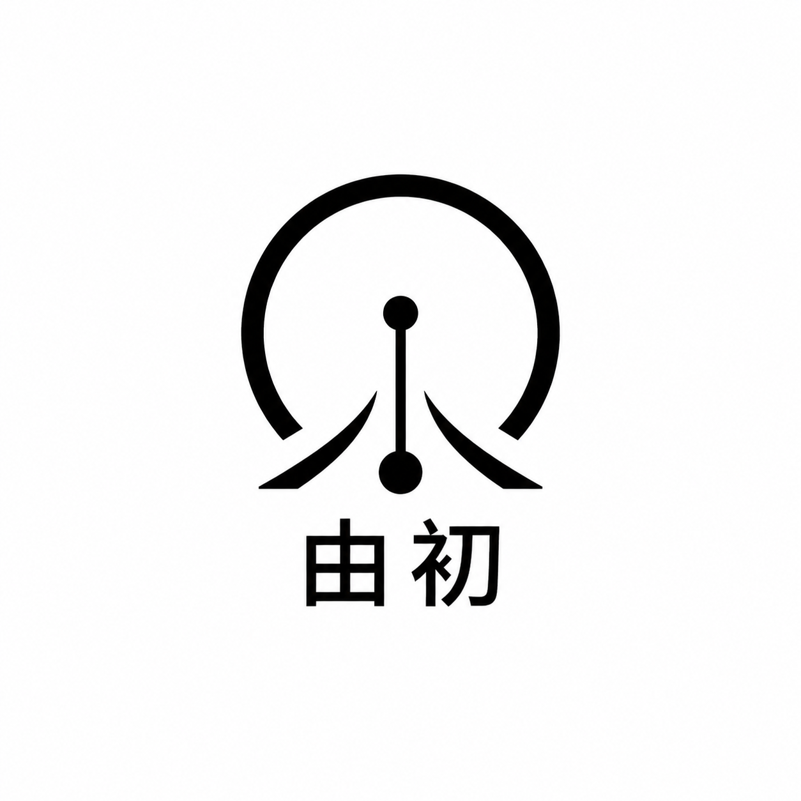
CASE A1
方形｜极简几何 AI 感
头像AI感极简
适合做理性、克制的头像基础款；如果符号过抽象，需要后续绑定“由初”的命名解释。
识别4
定位4
小图4
字标2
延展4
围绕「由初」这个 AI 产品经理个人公众号品牌，对 12 张生成结果进行可读化整理：方形头像、横版品牌、风格适配、风险和下一轮精修路线。
这组测试更像“个人品牌定位压力测试”：不是选最好看的单张，而是判断「由初」到底应该偏内容作者、AI 产品经理，还是高级个人 IP。
B3 字义抽象、B5 编辑感、A5 公众号感最贴近“AI 产品经理个人公众号”。它们既保留专业度，也没有过度公司化。
方形头像不宜承载太多中文笔画。A3/A5/A6 更适合作为头像基础；A2 可作为中文字标资产，而不是唯一头像。
「由初」具备语义资产：由=原因、路径、结构；初=起点、从0到1。logo 应优先围绕这个语义，而不是泛 AI 图标。
Logo 生成图可作为方向筛选，但不是最终可交付矢量源文件。中文、细线和复杂符号都需要后续人工精修。
公众号头像尺寸较小，完整“由初”二字若笔画过细会损失识别度。
节点、流程、几何图形容易变成普通 SaaS 图标，需绑定“由初”的独特语义。
建议把优胜方向交给矢量化流程，重画网格、字距、黑白反转和小尺寸版本。
A 组负责测试头像可用性，B 组负责测试公众号头图和横版品牌资产。评分为 1-5 的定性设计评审。

适合做理性、克制的头像基础款；如果符号过抽象，需要后续绑定“由初”的命名解释。
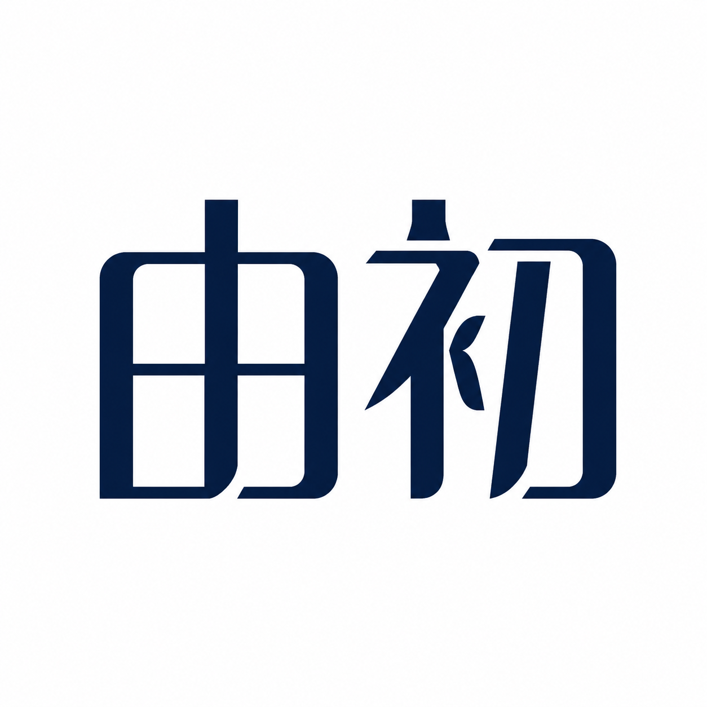
中文字标识别直接，公众号语境友好；风险是头像缩小后笔画密度偏高，适合精修字体比例。
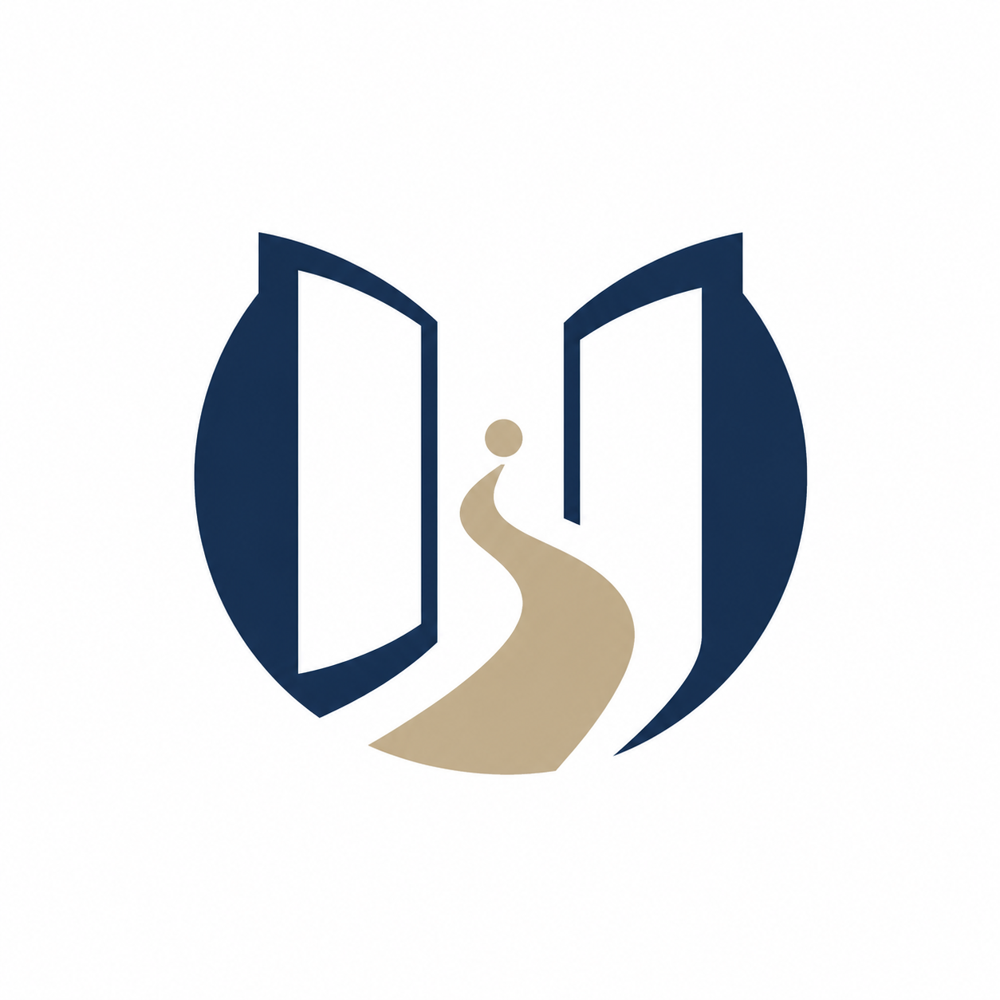
更有“从问题之由，到产品之初”的概念潜力，适合发展品牌故事；需要确保符号第一眼不晦涩。
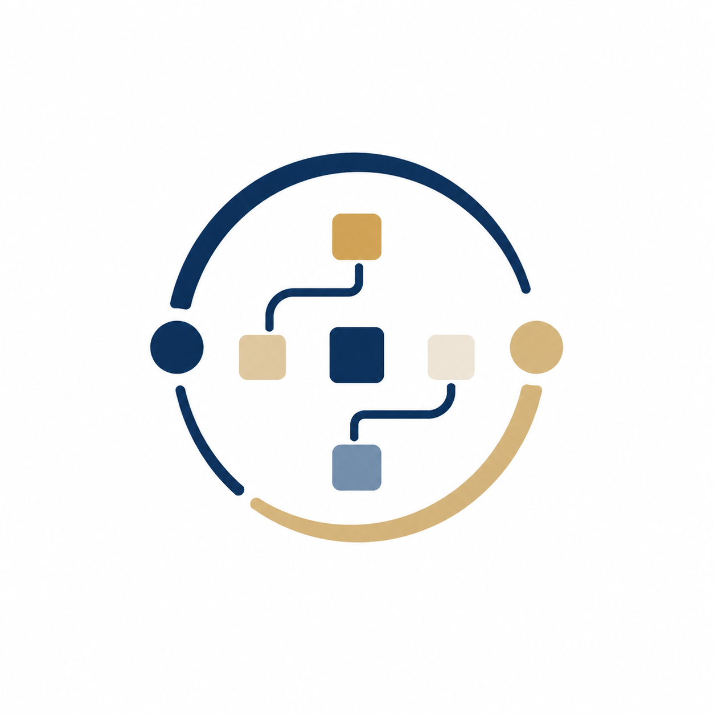
职业定位表达最强，能联想到流程、节点、产品架构；要避免变成普通流程图或工具图标。
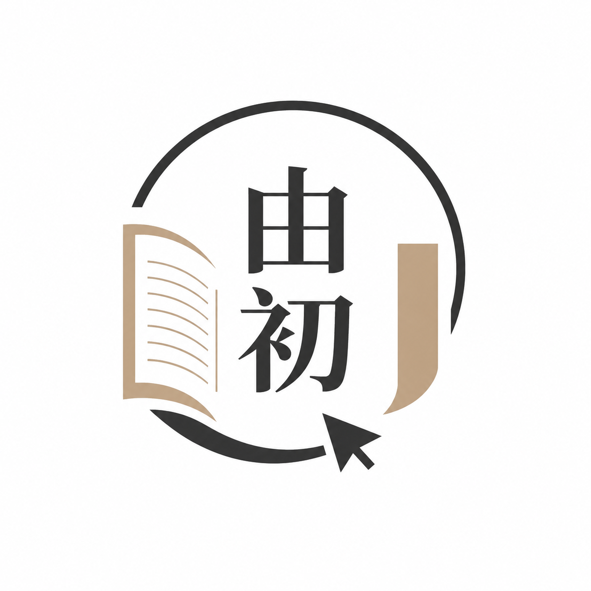
内容品牌气质更温和，适合公众号长期写作；若未来做咨询/课程，也比较稳。
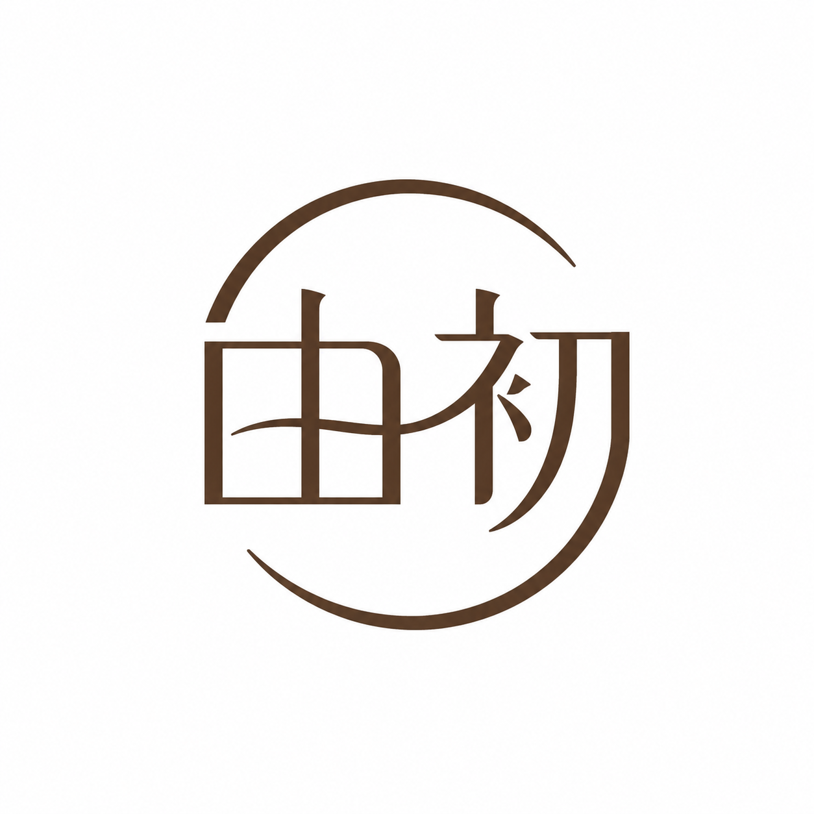
个人 IP 感更强，适合独立顾问/创作者路线；专业定位需要靠简介和横版字标补足。
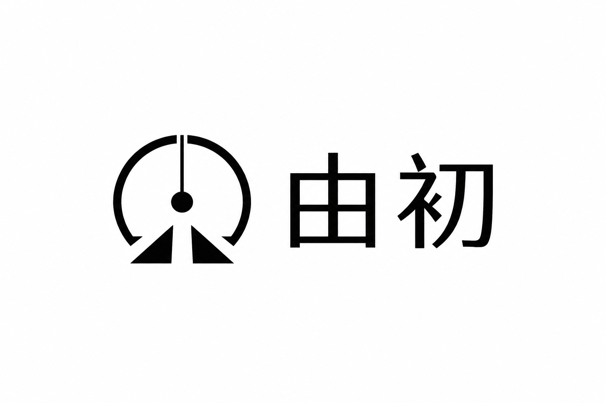
适合网站导航和文章头部，气质稳定；可作为后续品牌系统的低风险方向。
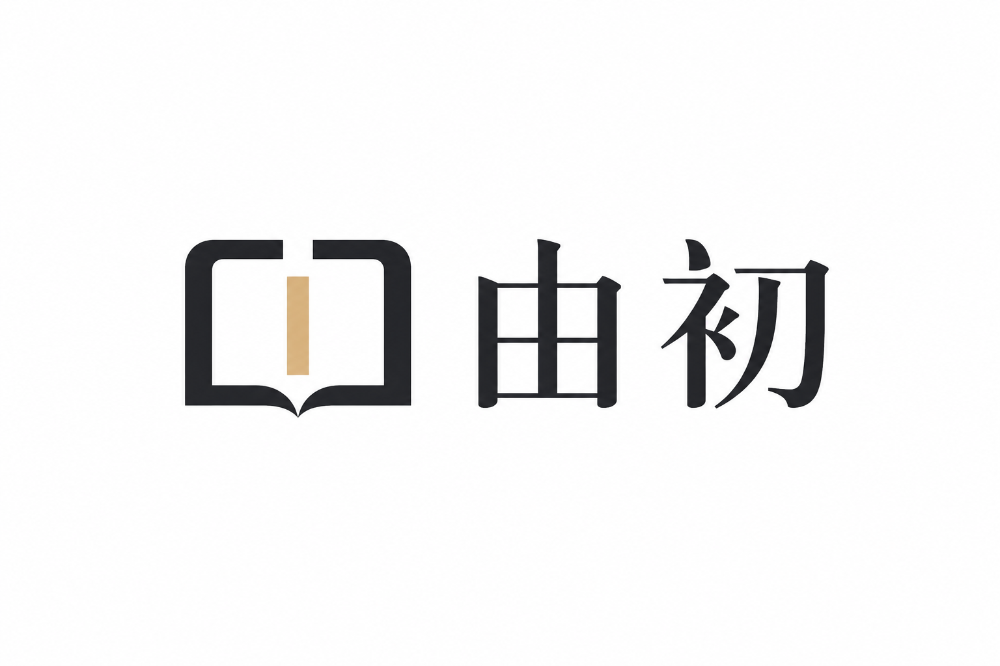
品牌名传达最直接，中文无明显错字；适合公众号头图，但需注意字距和定制字体的独特性。
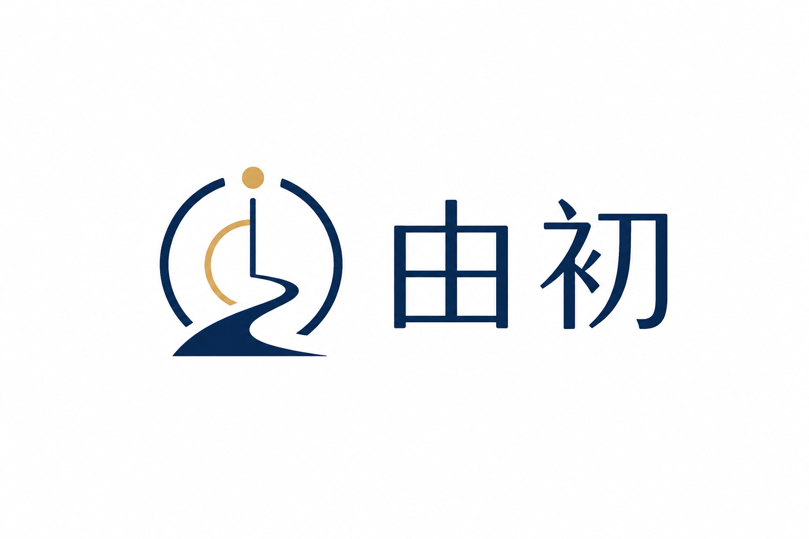
概念表达最接近“由初”的名字资产，适合沉淀为主 logo；建议第二轮重点精修。
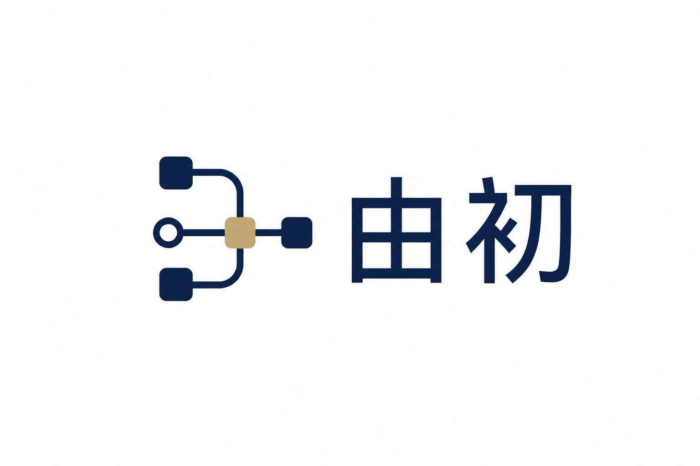
职业标签清楚，适合 AI 产品经理专栏；如果图形元素太多，后续需简化为 favicon 级别。
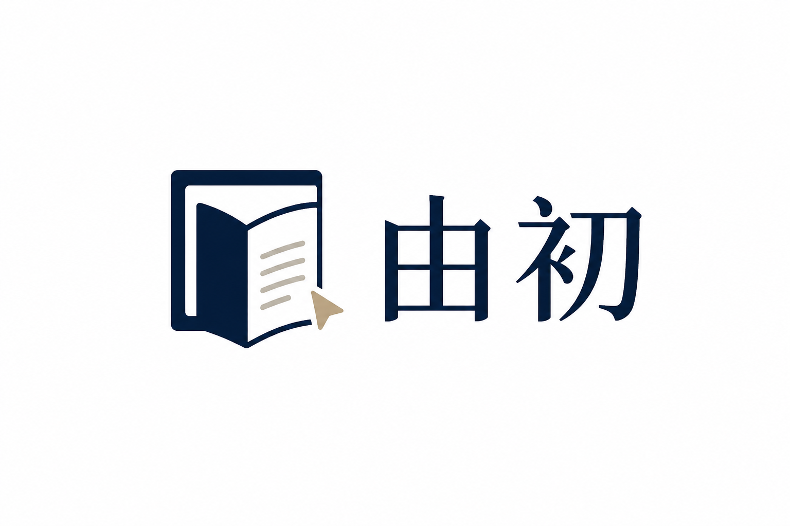
最贴近“公众号品牌”的阅读场景，内容气质强；作为公众号头图候选价值高。
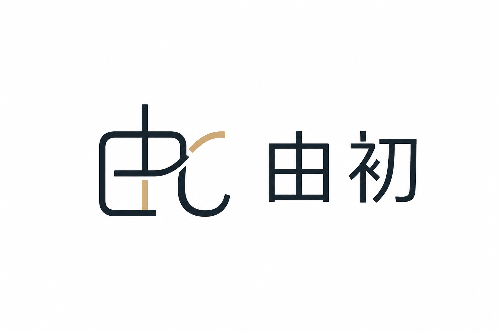
更像长期个人品牌资产，适合个人主页、课程和咨询；需要平衡“人”的气质与 AI PM 的专业标签。
下一轮不要再平均扩散，而是围绕两个候选方向做深挖。
把“由、初、路径、原点、从0到1”做成核心符号。适合长期品牌故事，也最不容易变成普通 AI 账号。
突出公众号、内容、知识输出和审美，适合马上落地为头像、头图、文章封面和专栏视觉。